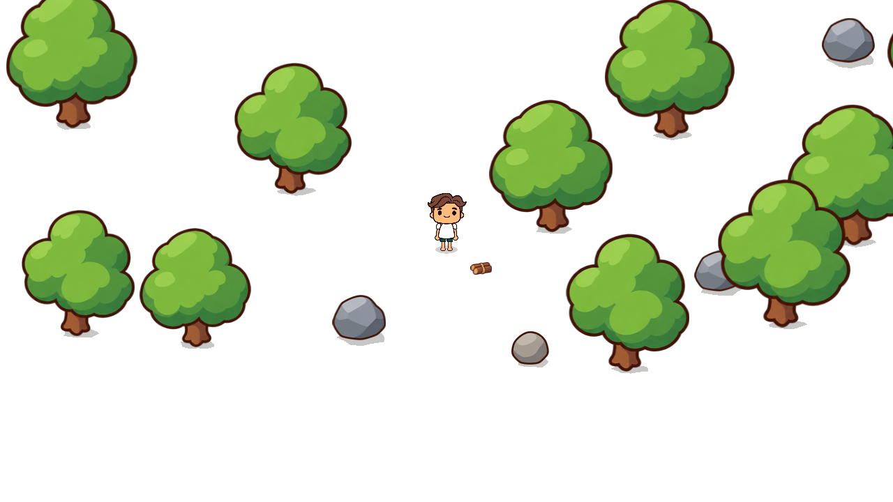

<!doctype html><html lang="zh-CN"><meta charset="utf-8"><meta name="viewport" content="width=device-width, initial-scale=1"><title>风栖原野 · 独立地面美术样板</title><style>
*{box-sizing:border-box}body{margin:0;background:#eef1e8;color:#30402c;font:15px/1.6 "Microsoft YaHei",sans-serif}header,main{max-width:1344px;margin:auto;padding:20px 32px}header{padding-bottom:10px}small{letter-spacing:2px;color:#768365}h1{font-size:24px;margin:6px 0}p{margin:5px 0;color:#69735e}nav{display:flex;gap:10px;flex-wrap:wrap;margin:18px 0 10px}a,button{font:inherit;color:inherit;border:1px solid #ced7c3;background:#f8faf4;border-radius:7px;padding:8px 16px;text-decoration:none;cursor:pointer}a.active{background:#496641;border-color:#496641;color:white}.controls{display:flex;gap:20px;align-items:center;margin:10px 0 15px}.scene{position:relative;width:100%;aspect-ratio:16/9;background:#a4c56e;overflow:hidden;box-shadow:0 3px 16px #33452215}.scene img{position:absolute;width:100%;height:100%;inset:0;object-fit:fill}.scene.actual{width:1280px;height:720px}.scroll{overflow:auto}footer{margin:14px 0;color:#738067;font-size:13px}h2{font-size:18px;margin:0} .note{max-width:820px}@media(max-width:700px){header,main{padding:14px}h1{font-size:21px}}
</style><header><small>风栖原野 / GROUND ART STUDIES</small><h1>先看草地，再决定方向</h1><p>三个独立静态样板 · 相同出生点布局与镜头 · 1280 × 720 · 树木、石头、角色使用原画面</p><nav><a href="A.html" data-key="A">A 柔和手绘</a><a href="B.html" data-key="B">B 精致卡通</a><a href="C.html" data-key="C">C 自然原野</a><a href="comparison.html">三图对比</a></nav></header><main><h2 id="name"></h2><p id="desc" class="note"></p><div class="controls"><label><input id="objects" type="checkbox" checked> 显示场景参照</label><label><input id="actual" type="checkbox"> 原始 1:1 像素</label><a id="png" download>保存同视角图片</a></div><div class="scroll"><div class="scene" id="scene"></div></div><footer>仅为独立美术预览，尚未选定或集成。取消场景参照可单独检查地面；浏览器缩放为 100% 时勾选原始像素查看游戏显示尺度。</footer></main><script>
const key=location.pathname.match(/([ABC])\.html$/)?.[1]||'A';
const names={A:'A · 柔和手绘草地',B:'B · 精致卡通草地',C:'C · 自然原野草地'};
const desc={A:'稀疏的轻柔草痕与近色笔触，留白最多，整体偏清新安静。',B:'短草、细小亮面与局部地表笔触，强调精致的卡通绘制感。',C:'疏密变化的细草组合与自然走向，强调原野感和地面肌理。'};
document.querySelector('#name').textContent=names[key];document.querySelector('#desc').textContent=desc[key];document.querySelector('#ground').src='ground-'+key+'.png';document.querySelector('[data-key="'+key+'"]').classList.add('active');document.querySelector('#png').href='preview-'+key+'.png';document.querySelector('#objects').onchange=e=>document.querySelector('#overlay').hidden=!e.target.checked;document.querySelector('#actual').onchange=e=>document.querySelector('#scene').classList.toggle('actual',e.target.checked);
</script></html>